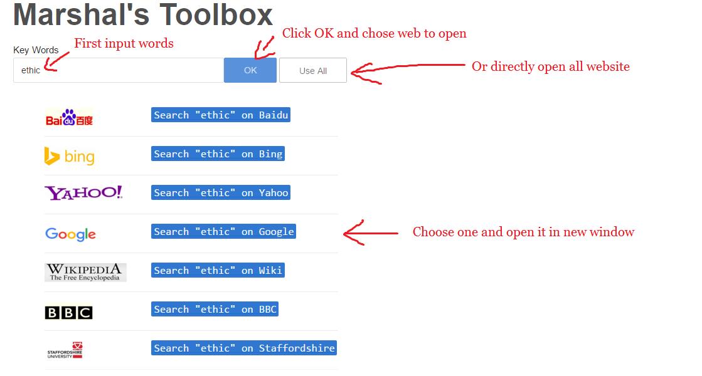
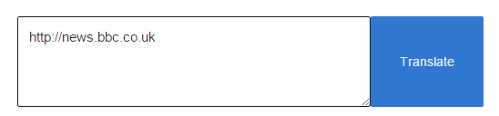
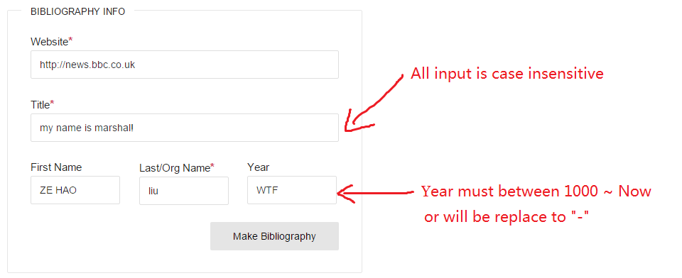
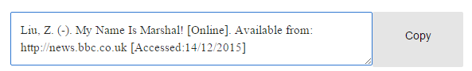
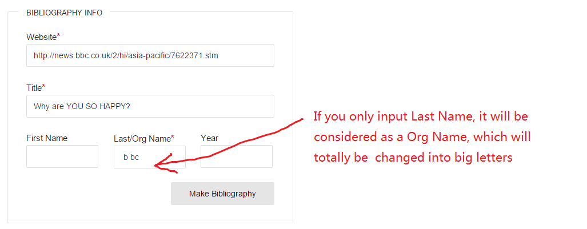
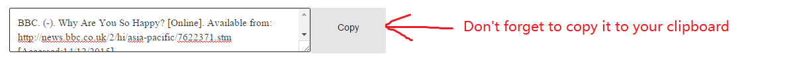

Function Examples
This toolbox can help you write research and make simple Bibliography(Harvard) of website sources
-
Use multiple search engine to research

-
Use Baidu to translate wors or website into Chinese

-
Input basic info of sources, print a bibliography


Last name(or Org name), Website, and Title is required.

